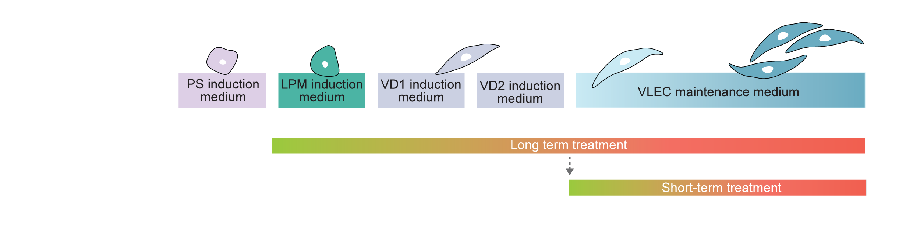
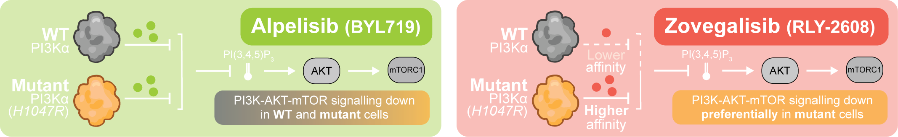

Venous organoids · Live-cell imaging
Long-term
treatment videos.
Brightfield imaging across the complete differentiation time course, from iPSCs through venous endothelial-like cells (VLECs).

PS, primitive streak · LPM, lateral plate mesoderm · VD1, venous induction day 1 · VD2, venous induction day 2 · VLECs, venous-like endothelial cells

Video collection
Compare treatments.
Alpelisib (BYL719) and zovegalisib (RLY-2608) are shown across the full 38-timepoint sequence, with the Vehicle reference held alongside.